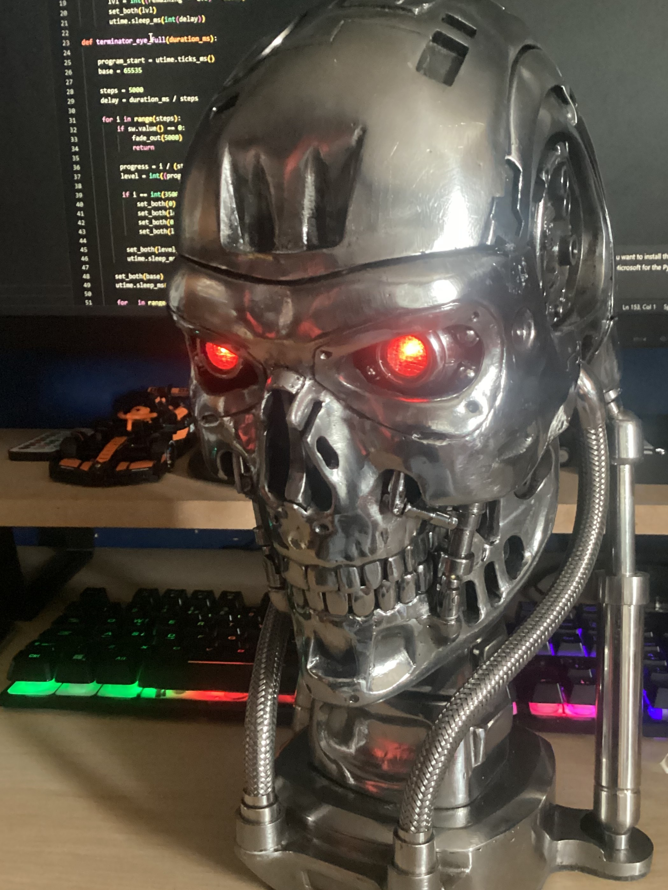
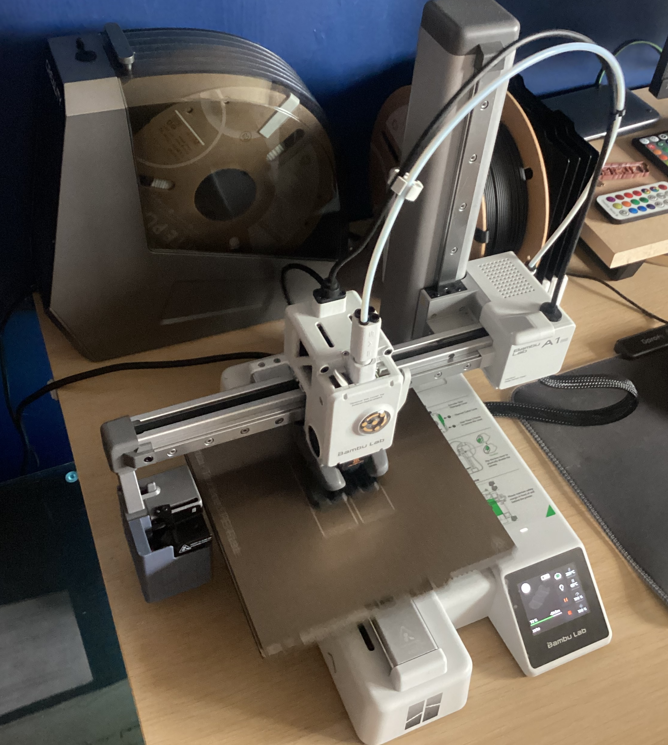

Each project has images you can view and plenty of writing explaining what it is, how I built it and what I learnt from the process. Feel free to use the random button so view a random project and also view my source code on GitHub.
Terminator Eye System

This build started as a test of real-time computer vision on low-power hardware and quickly evolved into a full tracking prototype. I designed the mounting system, tuned the camera pipeline for low latency, and experimented with overlay graphics inspired by sci-fi targeting UIs. Most of the challenge was balancing frame rate, detection reliability, and battery life while keeping the whole unit compact enough to wear and demo.
Gethin Hackpad v1

The Hackpad v1 was my first complete custom input device, from layout decisions to firmware mapping and enclosure fitment. I wanted something portable with dedicated macro functionality, so I prototyped several key arrangements before settling on this version. Building it taught me a lot about switch feel, stabilizer tuning, and USB firmware workflows. I now use it for repetitive shortcuts in coding tools and media control during long work sessions.
Gethin-75 Keyboard

The Gethin-75 was focused on creating a daily-driver keyboard with a balance of compact layout and full productivity access. I iterated on plate materials, mounting style, and damping to get a sound profile I liked without sacrificing typing consistency. This project gave me hands-on experience with keyboard acoustics, tolerance stacking, and assembly sequencing, and it remains one of my favourite hardware builds to use day-to-day.
GG Battle Robot

This robot project combined mechanical design, drivetrain testing, and impact-resistant packaging for competition-style use. I built and rebuilt key sections multiple times to reduce failure points and improve serviceability between matches. The biggest lessons came from rapid troubleshooting under pressure: swapping components fast, isolating electrical faults, and making practical trade-offs between raw performance and reliability.
IC 555 Blinky

A classic circuit, but a useful one: this 555 timer build was a focused exercise in analog fundamentals. I tested different resistor and capacitor values to observe how timing changed, then documented behaviour and component tolerances across multiple iterations. It’s a simple project on the surface, but it reinforced good habits in breadboarding, measurement, and debugging that carried over into larger electronics work.
Ghost One

Ghost One was built as a stealthy, minimal-profile concept with emphasis on clean cable routing and modular internals. The aim was to make something that looked simple externally but was easy to open, modify, and maintain. I explored several internal layouts before landing on this architecture, and the final version struck a good balance between aesthetics, accessibility, and thermal performance.
A1 Mini Camera System

This mini camera system was an exercise in shrinking a complete imaging setup into a practical portable form factor. I worked on housing design, lens positioning, and mounting to keep the footage stable while preserving image quality. A lot of effort went into power management and recording workflow so it could be used quickly in real scenarios without a long setup process.
Project Eight

This section is currently a placeholder for the next major build. I use it to plan concept sketches, define constraints, and list milestones before fabrication starts. The goal is to keep each project documented from idea to final iteration, including what failed, what changed, and what I’d do differently in a second version.